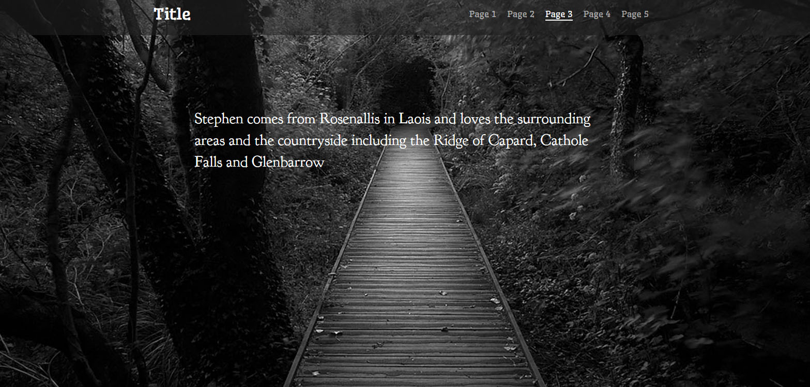
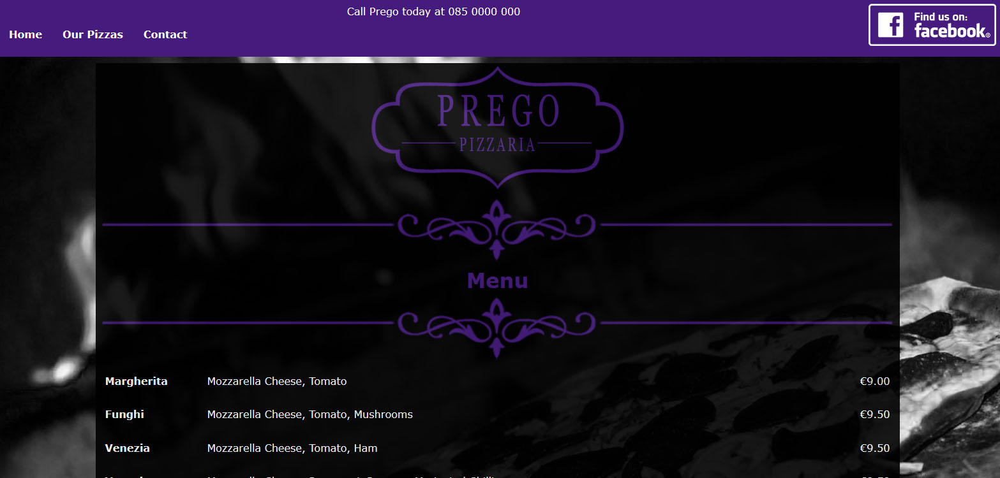
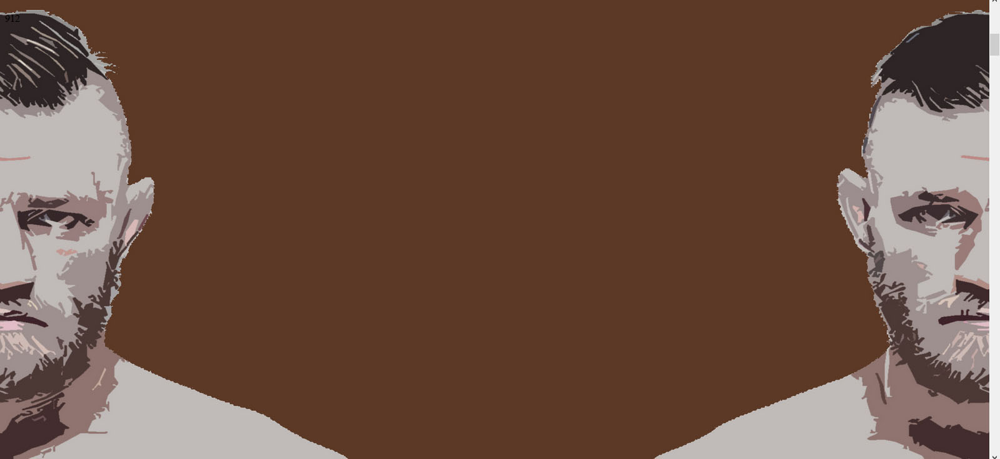

Web Design
Scrolling Website
This is just a sample of a scrolling single page website that uses jQuery for image transitions. Click on the image to view the site.
Brochure Website
This is just a sample of a simple brochure website for a Pizza place. Click on the image to view the site.
Parallax Scrolling Website
This is a parallax scrolling website that was done as part of a college project. As it stands the sites styles are not complete and in progress.